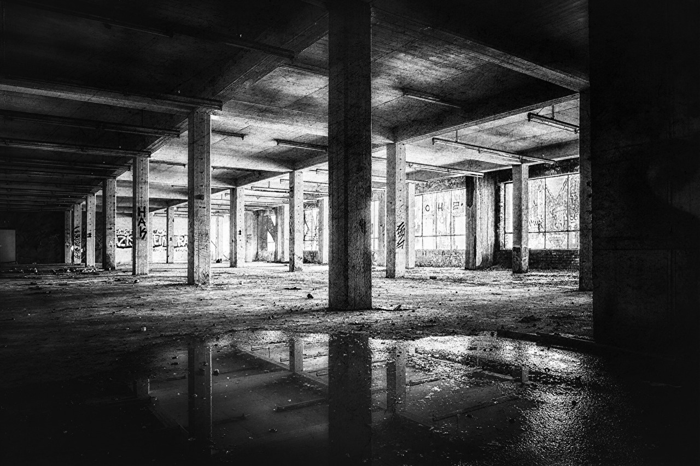

破壊されたものの美しさ
- 破壊美…というのはどちらかと言えば、壊すこと、壊れることそのもの、あるいは壊れる瞬間の美を言う。
- 退廃美はカウンターカルチャーやアンダーグラウンドといった意味合いも含む。
- 荒廃美はこの内最も純粋な言い方だろうか。

錆びた金属、壊れた機械、放棄された施設、使い古された道具… それらは特有の美を秘めている。
レトロブーム、軍艦島ツアー、高騰したヴィンテージデニム…
根幹を同じくする何かに人は惹きつけられる。
子どもの頃、知り合いの部屋を訪ると、
床や机に本やら玩具やらが乱雑に散らばっていた。
生活の中でなされた配置、生活感の美、
僕はそれに魅了され、再びその部屋を訪れたいと願った。
これが荒廃美における原体験になった。
家に帰るなり自分で部屋を散らかしてみた。……が、ダメだった。
どうしても作為が見て取れる。
バランスを考えて配置しても、ぎこちなく不自然になるのだ。

別に、
汚くするだけならいくらでもできる。
ただ、
美しく散らかすということは存外難しいものだ。
どうやら、
散らかすという行為にも才能があるらしい。